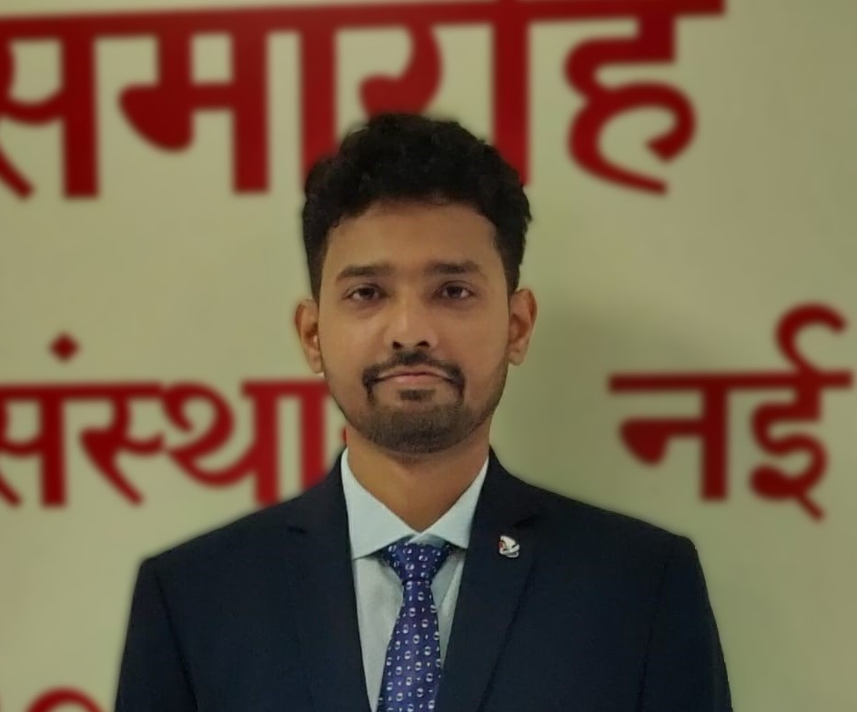

Vivek Kumar
I'm a neonatologist by training, but curiosity is really my full-time job. I spend my days in the NICU and my evenings reading about artificial intelligence, complex systems, decision-making, and ideas that have nothing to do with medicine — and somehow it all connects. This site is my thinking out loud in public.
Sometimes that thinking becomes writing. Sometimes it becomes tools when I can't find ones that work the way clinicians actually need them to. Everything here sits somewhere at the intersection of neonatology, technology, and curiosity.
NeoFORT (Neonatal Fluid Optimization & Review Tool) is a clinician-designed digital platform developed to support evidence-based neonatal nutrition and bedside decision-making in NICU settings.
Version 1.0 currently includes:
NeoFORT is designed to reduce calculation errors, save bedside time, and promote structured documentation in neonatal units.
Open NeoFORT →"In neonatal care, small numbers carry great weight. A minor miscalculation can affect a life measured in grams. NeoFORT was first conceptualised during my DM training at AIIMS, New Delhi, where I developed Excel-based calculators that continue to be used in clinical practice at AIIMS and other centres.
Over time, it became clear that thoughtfully designed digital tools could further enhance safety, efficiency, and standardisation in the NICU. NeoFORT represents the evolution of that early work into a clinician-friendly application, developed with the assistance of modern digital technologies.
It is my hope that this platform supports colleagues in delivering precise, efficient, and compassionate care to the smallest patients we serve."
Research & Publications
Clinician-researcher working at the intersection of neonatal sepsis, digital health infrastructure, and AI-assisted decision-making. Published across national and international indexed journals with a focus on evidence that can change practice in Indian NICUs.
Last updated: March 2026 · Source: Google Scholar
Ongoing Projects
ActivePast Projects
CompletedSelected Publications
Top 5Chosen by the author · See all on Google Scholar →
Book chapters
5 chaptersAwards & Recognition
Open to collaboration on neonatal sepsis, digital health infrastructure, or AI in the NICU. If your work intersects with any of these, get in touch.
Teaching & Training
Undergraduate and postgraduate teaching at LHMC, New Delhi. Committed to evidence-based neonatal education, research methodology, and building the next generation of clinical scientists — doctors who can read data, question assumptions, and build tools.
DM Neonatology Supervision
Thesis supervision and clinical training for DM Neonatology fellows. Emphasis on research methodology, biostatistics, data literacy, and building good clinical questions. Trainees are encouraged to engage with digital tools and AI literature early.
MD Pediatrics Teaching
Neonatology module lectures and bedside clinics for MD Pediatrics residents — covering resuscitation, neonatal sepsis, respiratory distress, nutrition, and neurodevelopment. Special focus on rational antibiotic use and sepsis workup.
MBBS Undergraduate Clinics
Bedside teaching and clinical demonstration for MBBS students in the NICU and neonatal ward at LHMC. Emphasis on observation, clinical reasoning, and understanding neonatal physiology from first principles.
Neonatal Resuscitation Program (NRP)
Instructor for NRP workshops at LHMC. Simulation-based training for pediatric residents and NICU nursing staff. Focus on team communication and algorithmic thinking under pressure.
Introduction to AI for Clinicians
Seminar series on ML fundamentals, clinical AI tools, and how doctors can critically evaluate AI/ML research. Designed for residents and fellows who want to engage with — not just consume — the AI literature.
Research Methodology for Neonatology Fellows
Structured sessions on study design, data collection, SPSS/R basics, and scientific writing. Born from supervising DM theses and noticing the same gaps appear year after year.
"The best clinical teachers I had didn't just teach me what to do — they showed me how to think. My goal is to train doctors who can reason carefully, question the evidence, and ask the next good question. In neonatology, precision matters. We should never be comfortable with 'good enough.'"
— Dr. Vivek Kumar
Ideas & Perspectives
Thoughts on neonatal medicine, AI in healthcare, building clinical tools, and the future of neonatal care in India. Written for curious clinicians — not academic journals. Opinions are my own and not that of any institution.
Clinical Tools
Digital tools designed by a clinician, for clinicians. Built to reduce errors, save bedside time, and close the gap between what we know and what we do in the NICU.
NeoFORT
Neonatal Fluid Optimization & Review Tool. A clinician-designed platform for evidence-based neonatal nutrition and bedside TPN calculation — born from Excel sheets at AIIMS, refined through years of NICU practice at LHMC. Reduces calculation errors and supports structured documentation.
"In neonatal care, small numbers carry great weight. A minor miscalculation can affect a life measured in grams. NeoFORT was first conceptualised during my DM training at AIIMS, New Delhi, where I developed Excel-based calculators that continue to be used in clinical practice at AIIMS and other centres across India."
"Over time, it became clear that thoughtfully designed digital tools could further enhance safety, efficiency, and standardisation. NeoFORT represents the evolution of that early work — developed with modern digital technologies, shaped entirely by bedside need."
NeoSepsis Score
An AI-assisted sepsis risk stratification tool for the NICU, built on the biomarker and clinical data from the DBT-funded sepsis registry at LHMC. Designed to support early recognition without replacing clinical judgment.
NeoREG
A structured digital registry platform for NICUs — designed with AI-readiness from day one. Captures standardised sepsis episodes, treatment decisions, and outcomes in a format compatible with downstream ML pipelines.
Citation: If you use NeoFORT in clinical or research settings, please cite: Vivek Kumar et al., "NeoFORT: A digital tool for neonatal TPN and nutrition audit," [Journal], [Year].
About Dr. Vivek Kumar
Department of Neonatology
LHMC & Associated Hospitals
New Delhi
I am a neonatologist at LHMC, New Delhi, where I combine clinical care with research and digital health. My MBBS, MD (Pediatrics), and DM (Neonatology) are all from AIIMS New Delhi — an institution that shaped how I think about medicine as much as it trained me in it.
For four years, I led a Dept. of Biotechnology-funded project on neonatal sepsis at LHMC — one of the largest studies of its kind at a tertiary care centre in North India. The project was never just about counting organisms. It was about building the kind of structured, high-quality database that can eventually train a machine to see what a clinician sees at 3am.
My three obsessions are sepsis, digital databases, and artificial intelligence. These aren't separate interests — they are, in my view, one long project. The sepsis problem in Indian NICUs will not be solved by a better antibiotic. It will be solved by better recognition, earlier decisions, and smarter tools. That is the work.
Outside the NICU, I build clinical software, think in public about medicine and technology, and teach residents to question everything — including me.
-
DM NeonatologyAll India Institute of Medical Sciences, New DelhiAIIMS Delhi
-
MD PediatricsAll India Institute of Medical Sciences, New DelhiAIIMS Delhi
-
MBBSAll India Institute of Medical Sciences, New DelhiAIIMS Delhi
-
Assistant Professor, NeonatologyLHMC & Associated Hospitals, New Delhi2021 – Present
-
Principal Investigator — DBT Sepsis ProjectDept. of Biotechnology, Govt. of India2021 – 2025
-
Senior Resident, NeonatologyAIIMS, New DelhiDuring DM Training
For research collaborations, tool feedback, speaking invitations, or clinical AI discussions — I'm always interested in connecting with people working at the intersection of medicine and technology.
[email protected] →